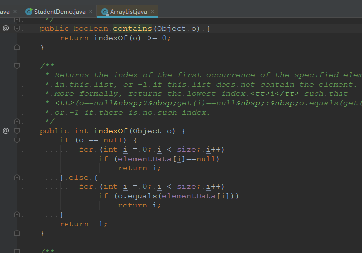
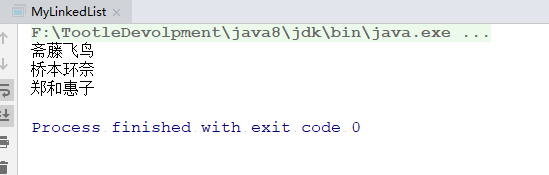
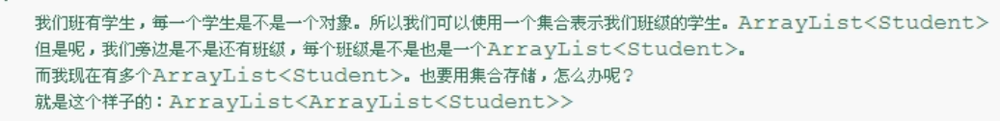
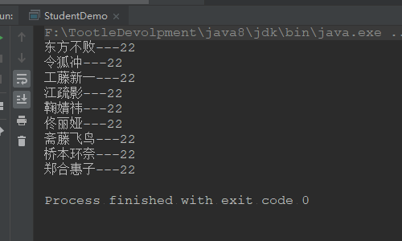
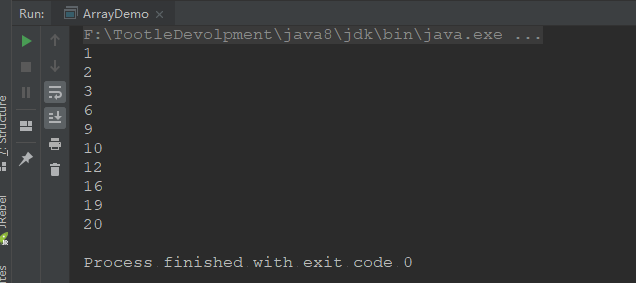
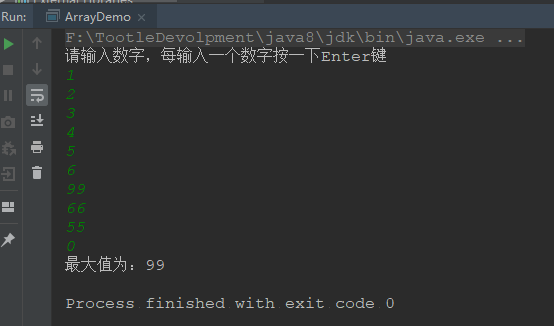

List的三大儿子
一、ArrayList集合的功能概述
List接口的大小可变数组的实现。实现了所有可选列表操作，并允许包括null在内的所有元素。除了实现List接口外，此类还提供一些方法来操作内部用来存储列表的数组的大小。每个
ArrayList实例都有一个容量。该容量是指用来存储列表元素的数组的大小。它总是至少等于列表的大小。随着向 ArrayList 中不断添加元素，其容量也自动增长。并未指定增长策略的细节，因为这不只是添加元素会带来分摊固定时间开销那样简单。注意，此实现不是同步的。
同步方法，加锁，如下
List list = Collections.synchronizedList(new ArrayList(...));
二、Vector集合的功能概述
Vector类可以实现可增长的对象数组。与数组一样，它包含可以使用整数索引进行访问的组件。但是，Vector的大小可以根据需要增大或缩小，以适应创建Vector后进行添加或移除项的操作。每个向量会试图通过维护
capacity和capacityIncrement来优化存储管理。capacity始终至少应与向量的大小相等；这个值通常比后者大些，因为随着将组件添加到向量中，其存储将按capacityIncrement的大小增加存储块。应用程序可以在插入大量组件前增加向量的容量；这样就减少了增加的重分配的量。注意：
因为Vector在1.0版的jdk中已存在，
从 Java 2 平台 v1.2 开始，此类改进为可以实现
List接口，使它成为 Java Collections Framework的成员。与新 collection 实现不同，Vector是同步的。Vector是线程安全的
Vector特有方法的测试
public class VectorDemo {
public static void main(String[] args) {
Vector vector = new Vector();
vector.addElement("郑和惠子");
vector.addElement("郑和惠子");
vector.addElement("郑和惠子");
vector.addElement("郑和惠子");
vector.addElement("郑和惠子");
for (int i = 0; i < vector.size(); i++) {
System.out.println(vector.elementAt(i));
}
System.out.println("--------------------");
System.out.println(vector.remove("郑和惠子"));
System.out.println("--------------------");
Enumeration en = vector.elements();
while (en.hasMoreElements()) {
System.out.println(en.nextElement());
}
}
}三、LinkedList集合的功能概述
List接口的链接列表实现。实现所有可选的列表操作，并且允许所有元素（包括null）。除了实现List接口外，LinkedList类还为在列表的开头及结尾get、remove和insert元素提供了统一的命名方法。这些操作允许将链接列表用作堆栈、队列或双端队列。此类实现
Deque接口，为add、poll提供先进先出队列操作，以及其他堆栈和双端队列操作。所有操作都是按照双重链接列表的需要执行的。在列表中编索引的操作将从开头或结尾遍历列表（从靠近指定索引的一端）。
注意，此实现不是同步的。
同步方法加锁：
List list = Collections.synchronizedList(new LinkedList(...));
四、小案例
去除ArrayList中的重复元素。
方法一：
public class ArraysListDemo {
public static void main(String[] args) {
ArrayList arrayList = new ArrayList();
arrayList.add("郑和惠子");
arrayList.add("桥本环奈");
arrayList.add("斋藤飞鸟");
arrayList.add("工藤新一");
arrayList.add("工藤新一");
ArrayList al = new ArrayList();
Iterator iterator = arrayList.iterator();
while (iterator.hasNext()) {
String s = (String) iterator.next();
if (!al.contains(s)) {
al.add(s);
}
}
ListIterator listIterator = al.listIterator();
while (listIterator.hasNext()) {
System.out.println(listIterator.next());
}
}
}方法二
public class ArraysListDemo {
public static void main(String[] args) {
ArrayList arrayList = new ArrayList();
arrayList.add("郑和惠子");
arrayList.add("桥本环奈");
arrayList.add("桥本环奈");
arrayList.add("桥本环奈");
arrayList.add("桥本环奈");
arrayList.add("桥本环奈");
arrayList.add("桥本环奈");
arrayList.add("斋藤飞鸟");
arrayList.add("斋藤飞鸟");
arrayList.add("斋藤飞鸟");
arrayList.add("斋藤飞鸟");
arrayList.add("斋藤飞鸟");
arrayList.add("斋藤飞鸟");
arrayList.add("斋藤飞鸟");
arrayList.add("斋藤飞鸟");
arrayList.add("工藤新一");
arrayList.add("工藤新一");
for (int x = 0; x < arrayList.size(); x++) {
for (int y = x+1; y < arrayList.size(); y++) {
if (arrayList.get(x).equals(arrayList.get(y))) {
arrayList.remove(y);
//因为每次remove元素后，就会做++，集合会因为替位的原因导致出现重复得元素
y--;
}
}
}
ListIterator listIterator = arrayList.listIterator();
while (listIterator.hasNext()) {
System.out.println(listIterator.next());
}
}
}对象去重
public class Student {
private String name;
private int age;
public Student(String name, int age) {
this.name = name;
this.age = age;
}
public Student() {
}
public String getName() {
return name;
}
public void setName(String name) {
this.name = name;
}
public int getAge() {
return age;
}
public void setAge(int age) {
this.age = age;
}
@Override
public String toString() {
return "Student{" +
"name='" + name + '\'' +
", age=" + age +
'}';
}
@Override
public boolean equals(Object o) {
if (this == o) return true;
if (!(o instanceof Student)) return false;
Student student = (Student) o;
return getAge() == student.getAge() &&
getName().equals(student.getName());
}
}public class StudentDemo {
public static void main(String[] args) {
ArrayList arrayList = new ArrayList();
Student s1 = new Student("东方不败", 22);
Student s2 = new Student("令狐冲", 22);
Student s3 = new Student("斋藤飞鸟", 22);
Student s4 = new Student("斋藤飞鸟", 22);
Student s5 = new Student("斋藤飞鸟", 22);
Student s6 = new Student("斋藤飞鸟", 22);
Student s7 = new Student("桥本环奈", 22);
Student s8 = new Student("郑合惠子", 22);
Student s9 = new Student("郑合惠子", 22);
Student s10 = new Student("郑合惠子", 22);
Student s11 = new Student("郑合惠子", 22);
arrayList.add(s1);
arrayList.add(s2);
arrayList.add(s3);
arrayList.add(s4);
arrayList.add(s5);
arrayList.add(s6);
arrayList.add(s7);
arrayList.add(s8);
arrayList.add(s9);
arrayList.add(s10);
arrayList.add(s11);
ArrayList newArrayList = new ArrayList();
Iterator it = arrayList.iterator();
while (it.hasNext()) {
Student s = (Student) it.next();
if (!newArrayList.contains(s)) {
newArrayList.add(s);
}
}
for (int x = 0; x < newArrayList.size(); x++) {
Student s = (Student) newArrayList.get(x);
System.out.println(s.getName() + "-------" + s.getAge());
}
}
}该方法重在重写equals方法，如果没重写equals方法，就无法达到去重的目的。
因为我们查看contains方法源码时，发现他是重写equals方法，如下图

如果我们不重写equals方法，它默认调用的是Object的equals方法，比较的是地址，而我们时new出来的对象，地址当然不同，所以我们无法去重。
用LinkedList模拟栈数据结构的结合，并测试
public class MyStack {
private LinkedList linkedList;
public MyStack(){
linkedList= new LinkedList();
}
public void add(Object o) {
linkedList.addFirst(o);
}
public Object get() {
return linkedList.remove();
}
}public class MyLinkedList {
public static void main(String[] args) {
MyStack myStack = new MyStack();
myStack.add("郑和惠子");
myStack.add("桥本环奈");
myStack.add("斋藤飞鸟");
System.out.println(myStack.get());
System.out.println(myStack.get());
System.out.println(myStack.get());
}
}
解析：
我们发现运行结果和栈一样，先进后出（FILO），说明我们成功模拟了栈的数据结构。
补充，集合嵌套遍历：
题目要求：

代码如下：
public class Student {
private String name;
private int age;
public Student(String name, int age) {
this.name = name;
this.age = age;
}
public Student() {
}
public String getName() {
return name;
}
public void setName(String name) {
this.name = name;
}
public int getAge() {
return age;
}
public void setAge(int age) {
this.age = age;
}
}public class StudentDemo {
public static void main(String[] args) {
ArrayList<Student> arrayList = new ArrayList<>();
Student s1 = new Student("东方不败", 22);
Student s2 = new Student("令狐冲", 22);
arrayList.add(s1);
arrayList.add(s2);
ArrayList<Student> arrayList1 = new ArrayList<>();
Student s3 = new Student("斋藤飞鸟", 22);
Student s7 = new Student("桥本环奈", 22);
Student s8 = new Student("郑合惠子", 22);
arrayList1.add(s3);
arrayList1.add(s7);
arrayList1.add(s8);
ArrayList<Student> arrayList2 = new ArrayList<>();
Student s9 = new Student("工藤新一", 22);
Student s10 = new Student("江疏影", 22);
Student s11 = new Student("鞠婧祎", 22);
Student s12= new Student("佟丽娅", 22);
arrayList2.add(s9);
arrayList2.add(s10);
arrayList2.add(s11);
arrayList2.add(s12);
ArrayList<ArrayList<Student>> dtos = new ArrayList<>();
dtos.add(arrayList);
dtos.add(arrayList2);
dtos.add(arrayList1);
for (ArrayList<Student> s : dtos) {
for (Student student : s) {
System.out.println(student.getName()+"---"+student.getAge());
}
}
}
}运行结果：

随机产生10个数，要求不能重复，且排序
撸代码：
public class ArrayDemo {
public static void main(String[] args) {
Random r = new Random();
ArrayList<Integer> arrayList = new ArrayList<>();
int count = 0;
while (count < 10) {
int number = r.nextInt(20)+1;
if (!arrayList.contains(number)) {
arrayList.add(number);
count++;
}
}
Collections.sort(arrayList);
for (Integer i : arrayList) {
System.out.println(i);
}
}
}运行结果：

找最大值
从键盘中录入数字，以‘0’结束，并找出最大值
撸代码：
public class ArrayDemo {
public static void main(String[] args) {
ArrayList<Integer> arrayList = new ArrayList<>();
Scanner sc = new Scanner(System.in);
System.out.println("请输入数字，每输入一个数字按一下Enter键");
while (true) {
int number = sc.nextInt();
if (number != 0) {
arrayList.add(number);
} else {
break;
}
}
System.out.println("最大值为："+Collections.max(arrayList));
}
}运行结果：

总结：
ArrayList集合是不安全的，但是可以通过加锁来实现线程安全
Vector是在JavaJDK1就出现的集合，所以拥有自己独特的方法，但现在有已不用，Vector集合是不安全的，但是可以通过加锁来实现线程安全
LinkedList是一个链表查询慢，删除快。